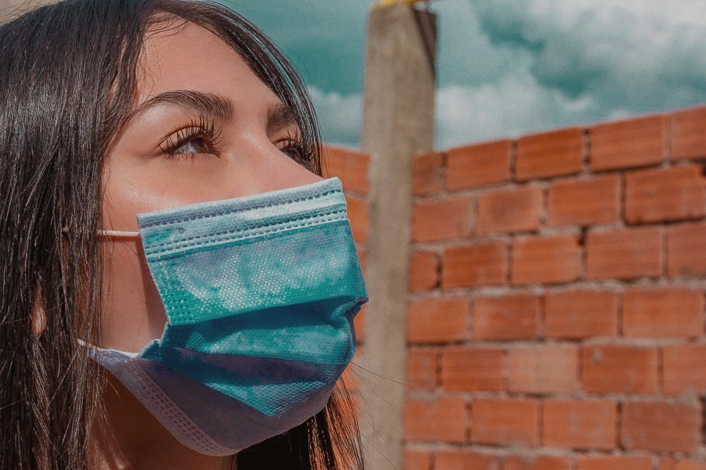
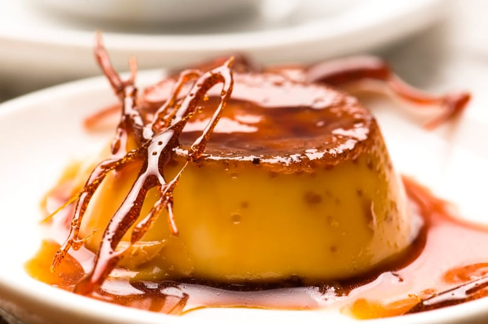
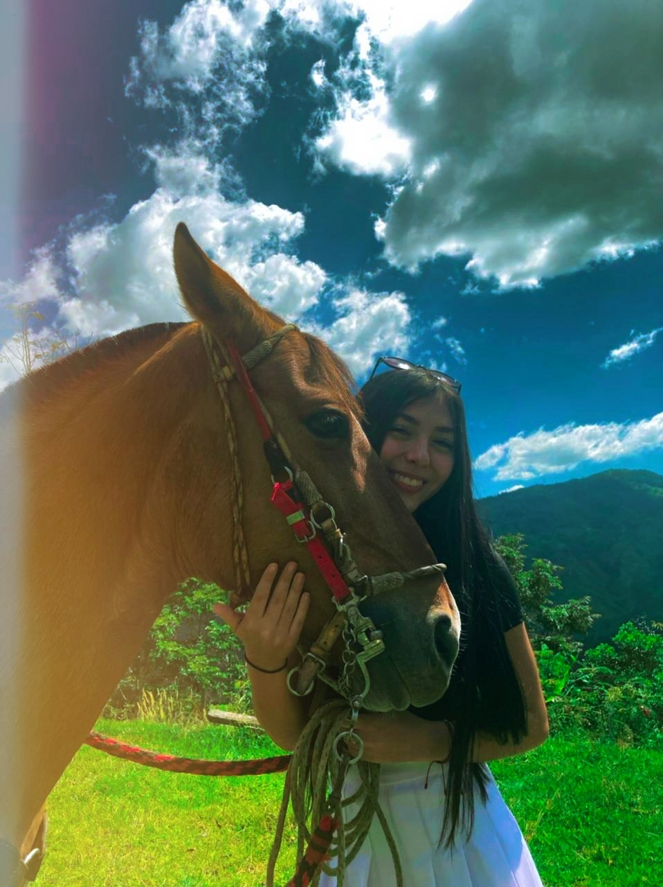
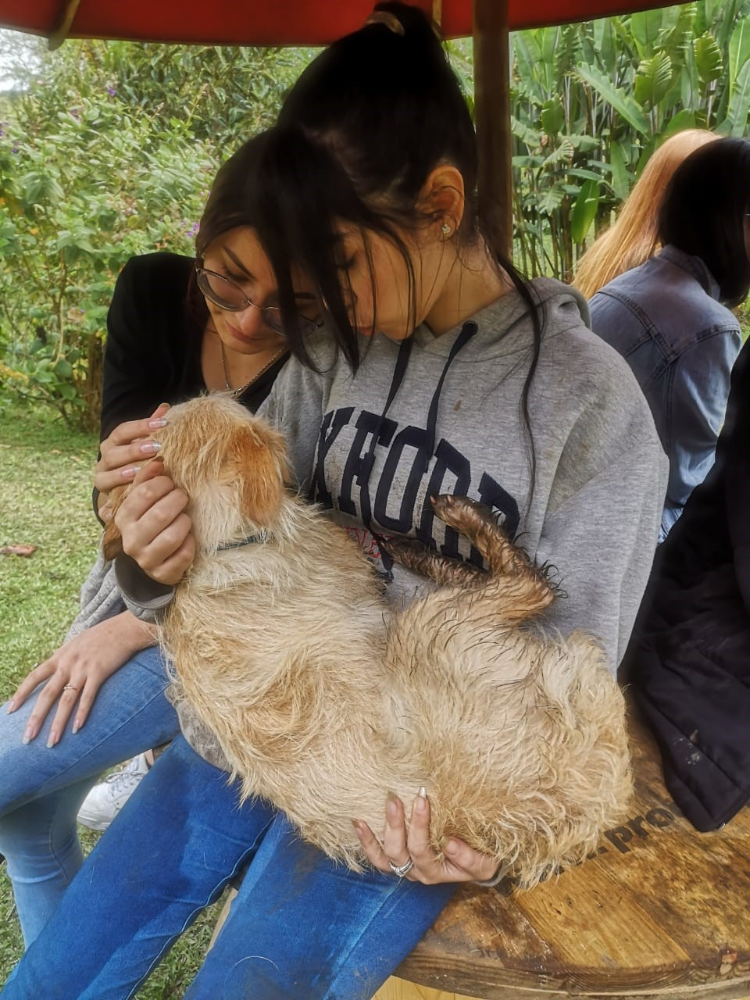

¡Hola a todos!, quiero darles la bienvenida a este pequeño blog
donde conocerán algunos de mis pasatiempos favoritos

🍰 Repostería 🍰
Uno de ellos es precisamente la
repostería, me encanta la lógica que parece simple pero
que realmente es compleja a la hora de llevarla a cabo,
por otro lado no les voy a negar que me gusta mucho porque
el dúlce y yo somos mejores amigos desde siempre y para siempre ♥.

🐶 Animales 🐴
Entre mis pasiones están los animales, su cuidado y actividades con ellos.
Hace unos meses estuve llevando cuido a un refugio, en el cual
conocí hermosos perros, gatos, tortugas y caballos muy felices y amorosos.
A modo de chisme, me enamoré en especial de uno que lo llamaron "Ramón chiquito",
él es el perrito que más tiempo lleva allí y su adopción no es negociable 😅,
aún tengo las fotos con él, aquí pueden ver una.


🔭 Astronomía y Fiolosofía 🤔
En mi tiempo libre también me gusta mucho afianzar saberes, leer datos curiosos
y en general aprender sobre estas dos áreas de conocimiento como lo son la astronomía y
la filosofía que tanto me encantan. Actualmente, para poder poner un poco más en práctica
este gusto, pertenezco a un semillero de astrofísica en la universidad eafit llamado "quasar".
🥰 Trabajo social 🌎
Este pasatiempos en específico lo podría considerar uno de mis favoritos. Definitivamente
ayudar a las personas, los animales y pertenecer a grupos sociales que tienen un gran
impacto en la trasformación social es de las mejores cosas que me han pasado en la vida,
me siento muy feliz por aportar desde lo mucho o poco que pueda dar para que el mundo
sea un mejor lugar para todos ♥.
🎶 Escuchar música y bailar 💃🏻
Hablando muy literal, todo lo que realizo a lo largo del día lo hago en compañía de música. A
partir de esta premisa, les cuento que cada actividad diaria y/o estado de ánimo le asigno un respectivo género, esto con el propósito de
concentrarme, mantener un buen humor, mejorar mi productividad y sentir siempre una fuerte conexión con ella.
ya hablando del baile específicamente, disfruto mucho de esta actividad física y siempre que tengo la oportunidad
lo hago esté donde esté.